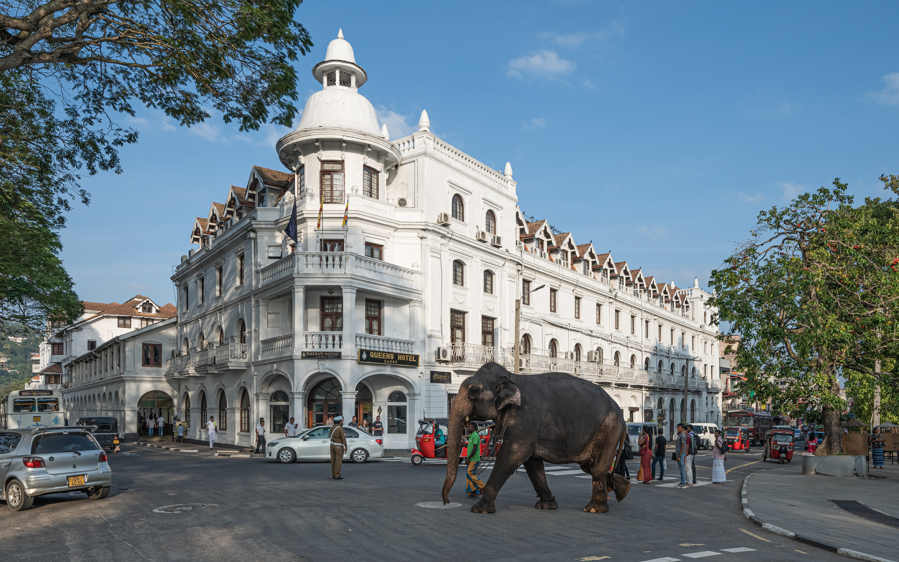
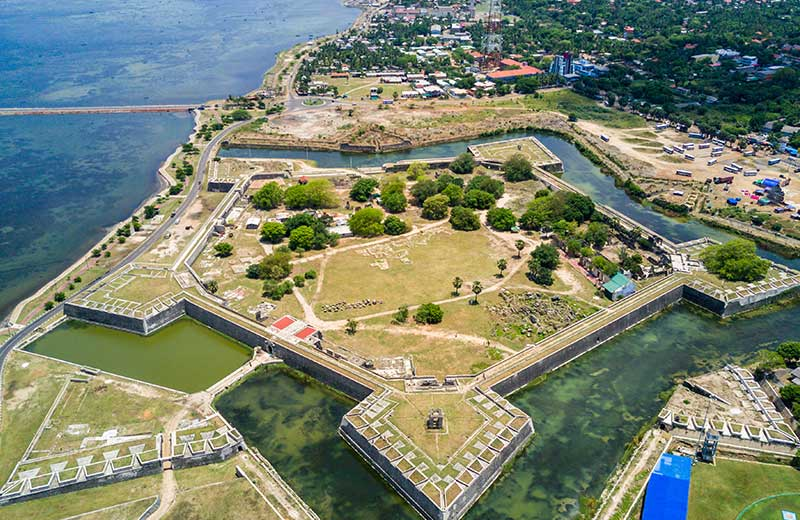
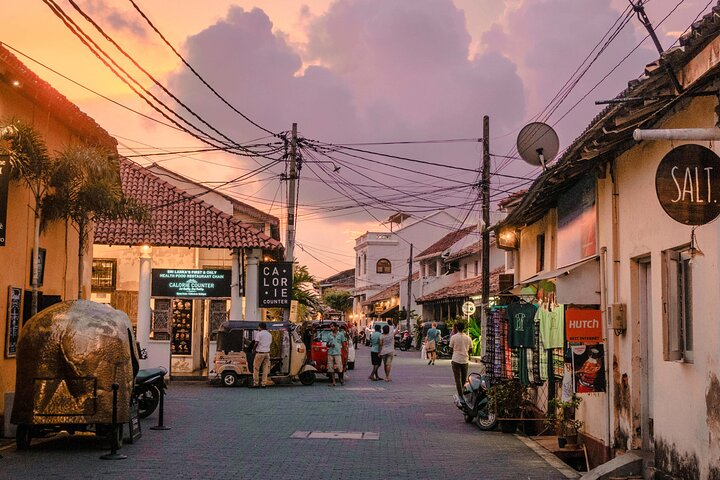
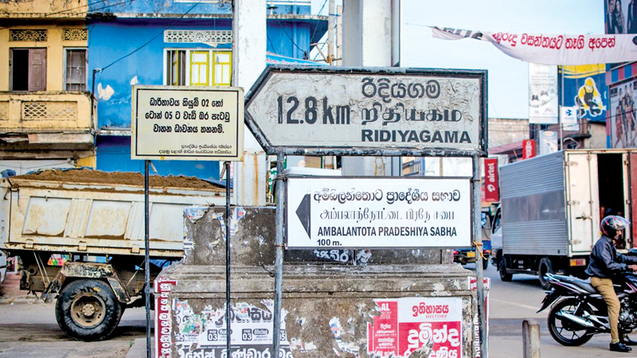
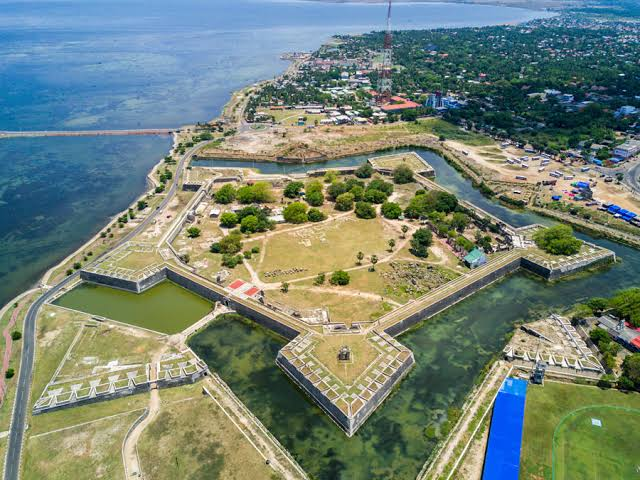

City Tours Sri Lanka
Explore Colombo, Galle, Kandy and more through cultural, historical and modern city experiences with LetsGo.
Cultural Sightseeing
Visit heritage sites, markets and historic landmarks across Sri Lanka's cities.
Local Food
Discover iconic food spots and unique culinary experiences in each destination.
Flexible Itineraries
Travel at your own pace with private transport and custom city routes.
About Sri Lankan City Tours
Explore the Cities
From vibrant Colombo to historic Galle and spiritual Kandy, Sri Lanka's cities offer a rich blend of heritage, culture, shopping and cuisine.
Popular Cities
Discover Colombo, Kandy, Galle, Matara, Hambantota, Jaffna and Anuradhapura through custom city sightseeing experiences.
Perfect for Short Trips
City tours are ideal for travelers who want to blend convenience, local culture and memorable experiences in a single day.
Local Culture
Enjoy historical landmarks, shopping streets, markets, temples and scenic neighborhoods with local insight.
Popular Cities

Colombo
Explore Sri Lanka's capital city with modern attractions, shopping, dining experiences, and historic landmarks.
Explore Colombo City Tour →
Kandy
Discover temples, culture, and scenic mountain surroundings in Sri Lanka's historic hill capital.
Explore Kandy City Tour →
Galle
Visit the famous Galle Fort, coastal attractions, colonial architecture, and beautiful seaside locations.
Explore Galle City Tour →
Negombo
Explore golden beaches, the bustling fish market, Dutch colonial heritage, and relaxing lagoon boat rides.
Explore Negombo City Tour →
Matara
Explore historic forts, temples, beaches, and cultural attractions in southern Sri Lanka.
Explore Matara City Tour →
Hambantota
Experience southern Sri Lanka with local culture, coastal beauty, wildlife, and unique attractions.
Explore Hambantota City Tour →
Ambalantota
Experience Ambalantota through wildlife, nature, local culture, and peaceful coastal landscapes.
Explore Ambalantota City Tour →
Jaffna
Discover northern Sri Lanka's unique culture, temples, history, and traditional experiences.
Explore Jaffna City Tour →
Anuradhapura
Explore ancient kingdoms, sacred temples, and UNESCO heritage sites of Sri Lanka.
Explore Anuradhapura City Tour →Tour Highlights
Historical Attractions
Visit forts, shrines, museums and city landmarks with local context.
Shopping
Explore vibrant markets, artisan shops and modern retail streets.
Local Food
Enjoy authentic Sri Lankan meals and hidden culinary gems.
City Sightseeing
Discover iconic sights and neighborhoods with easy transport between stops.
Frequently Asked Questions
Which cities can I visit on a Sri Lanka city tour?
Popular options include Colombo, Kandy, Galle, Matara, Hambantota, Jaffna and Anuradhapura.
Is the tour suitable for families?
Yes, city tours are great for families, couples and solo travelers looking for comfort and flexibility.
Can I customize the route?
Yes, LetsGo can tailor the city route based on your interests and travel pace.
Related Tours
Culture Tours
Discover heritage sites, temples and historical landmarks across Sri Lanka.
Explore TourCustom Tours
Build an itinerary that mixes city visits, beaches and nature experiences.
View DetailsBook Your City Tour
Explore Sri Lanka’s cities with LetsGo through comfortable, flexible and memorable sightseeing tours.